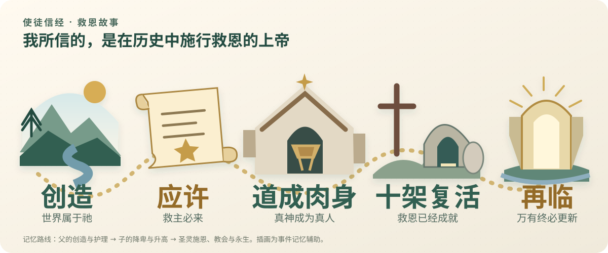
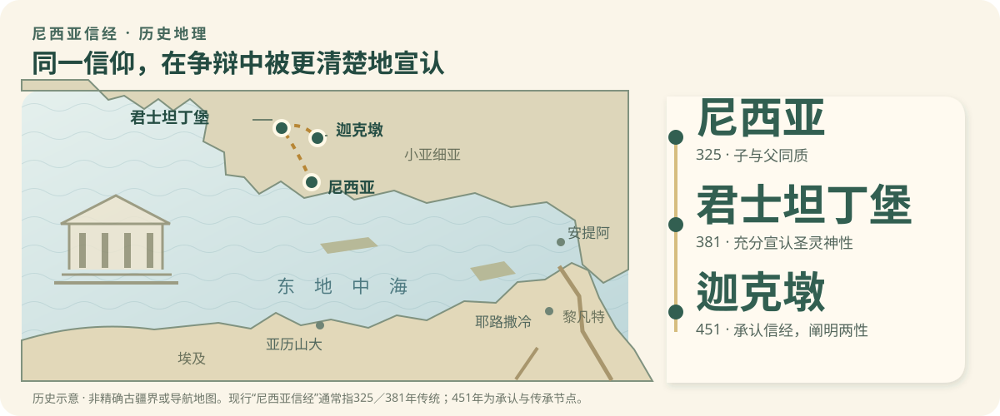
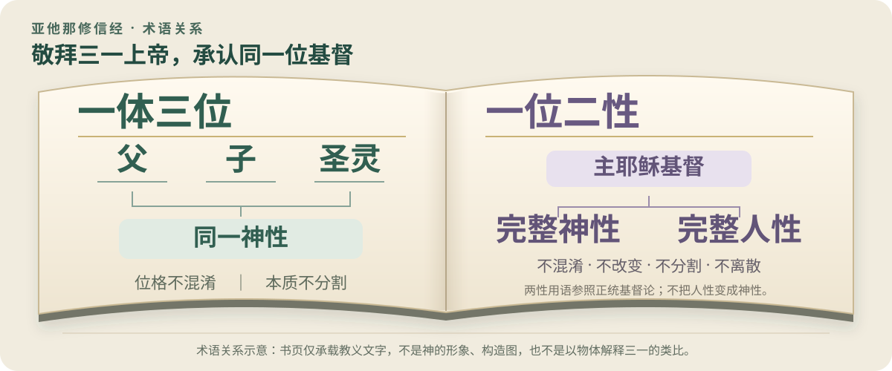

01
故事使徒信经
信仰的救恩故事，发生了什么？
父与创造 · 子降卑与升高 · 灵与新生命
从完整原文到十二条深读信仰的救恩故事，发生了什么？
为我们施行救恩的子与灵，究竟是谁？
一体三位、一位二性，应当怎样理解？
在原文或解读段落选中文字，即可加粗、着色、加底纹、画实线或虚线，并附上笔记。
三一神创造人；人背约而陷入罪与死亡；父差遣永恒的子成为真人，成就救赎；圣灵使人联于基督，召聚教会；救恩最终完成于身体复活和新创造。这是三份信经共同的圣经骨架。
不是先测算神如何组成，而是先认明圣经启示的独一三一神。父子灵真实有别、同具完整神性；创造与救赎都是这一位神不可分割的作为。
同一位永恒圣子取完整人性，作为中保顺服、受死、复活并升高。神性不改成人性，两性不拆成两人；由此守住充分救赎与真实代表。
圣灵使人借信心联合于基督。称义唯一根基是基督的义，信心领受，善行随之结出；三者不可调换，教会与复活盼望也不能从个人救恩中删去。
从应许、预表到成全，信经每一句都连着救赎历史。“基督受死”须接回祭物与中保；“身体复活”须接回创造的良善与新创造的盼望。
亚当背约，基督作为末后的亚当顺服、赎罪，使人藉信领受与神相交的恩惠。圣约不是背诵的额外负担，而是理解应许如何在基督里成为安慰。
叙事按圣经的正典次序展开；不为有争议的早期年代强定年份。播放可随时暂停。
十二条，沿着救恩故事认识神。
从西方受洗宣认逐渐形成，内容具有使徒性；不能据此认定十二使徒一人写一句。本文按常用十二条教学结构展开，与海德堡问答23–58的安排相互参照。
打开指定网站中文全文 ↗ 原文区与原创解读区分别标识。
使徒信经以父、子、圣灵为结构，把创造、救赎、教会与永生连成一条线：我相信的神，正是在真实历史中拯救罪人、使身体复活的三一上帝。
使徒信经不是可证实由十二位使徒各写一句的作品。它承接古代受洗宣认与信仰准则，和古罗马信经关系密切，在拉丁西方逐渐扩充；今日通行的完整形式，到八世纪已有文本见证。必须区分内容源于使徒福音、早期已有相近宣认，与现存全文逐字定型这三件事。它不是为单一会议临时拟定的争论文件，首先服事受洗、教导与共同敬拜；抵挡错误教训则是这种公开宣认自然产生的功用。名称表达所信与使徒见证一致，不能充当作者名单。
它生长于罗马帝国城市教会及后来的拉丁西方。交通网络使福音跨城传播，受洗教导使共同信仰能够跨代传递。罗马教会早期也使用希腊语，不能把古代罗马简单画成自始纯拉丁的单一文化。信经将创造主与救主放在同一宣认中，回应把物质世界看成低劣、把救恩理解为逃离身体的倾向；但不能把每一句都硬配给一种异端或一个写作年代。
罗马统治下的犹太地，逾越节与弥赛亚盼望构成耶稣受难的真实情境。彼拉多不是神话人物式的装饰，而把十字架放在可以追问的政治历史中。使徒宣讲的中心是耶稣受死、埋葬、复活，并以显现见证说明复活的真实性。后来的信经压缩这些事件，却不创造这些事件；读信经应先回到福音书与使徒见证。
第二世纪的爱任纽在里昂事奉，同时承接小亚细亚教会传统。他反对把创造主与救赎者分开，也反对只有少数人拥有秘密知识才能得救的主张。教会以共同信仰准则宣告：创造天地的神，就是差遣耶稣基督的神。这与使徒信经的方向相通，却不可将爱任纽的准则直接标作今日使徒信经的逐字全文。
鲁非努解释阿奎莱亚受洗宣认时，比较本地与罗马的表达差异。这个历史窗口让我们看见：古代教会既共同承认使徒福音，也存在地方措辞。今日完整文本经历传承与定型，并非一卷从十二使徒手中原封送出的签名稿。对版本诚实，不削弱其信仰价值；反而帮助人把权威次序放正：信经因忠于圣经而值得教会共同承认。
海德堡要理问答将使徒信经置于救赎部分，按父与创造、子与救赎、灵与成圣来教导。它不断追问这些真理给信徒什么益处，使背诵转为信靠。这是十六世纪改革宗的成熟教学运用，不能倒说古代作者已经采用整套海德堡课程。今天学习仍可沿此路径：先听神做了什么，再问我如何凭信心领受，并以感恩生活回应。
历史场景均为说明性叙述；正文保持全部展开，演示仅依次突出节点。
父是天地创造主，人的身体与世界原是美善；死亡来自罪的侵入。认识创造与堕落，才明白为何需要救赎，而不能把罪只理解为无知或心理不适。
亚伯拉罕的后裔、大卫的王与先知的复兴应许，在基督里汇聚。童女生子不是孤立奇观，而是神主动赐下中保，兑现自己曾对百姓说的话。
受苦、受死、埋葬、复活、升天、掌权与再来，构成救赎事件链。复活不是取消十字架，而是显明受死的救主已经得胜；升天也不是退出服事，而是以中保身份继续代求。
圣灵召聚教会，使人领受赦罪并等候身体复活。终点是神与复活的百姓同住；今天的团契、悔改与身体生活，都因此具有永恒方向。
圣约阅读不是寻找信经没有写出的秘密密码，而是把它接回圣经的应许历史。亚当背约以后，神主动应许得胜后裔；亚伯拉罕之约展开万族蒙福，大卫之约指向永远的王，新约应许赦罪与心的更新。耶稣作为末后的亚当顺服、受死、复活，成全恩典应许；圣灵使百姓联合于祂，教会在道与圣礼中受养育。《海德堡要理问答》19、26—58问及《比利时信条》17—26条提供改革宗展开。不同历史之约不可抹平，也不可把古代简短文本假称为已逐项讨论后来的所有圣约争议。
父创造，子救赎，灵成圣；十字架进历史，复活进永恒。
因圣灵感孕，从童贞女马利亚所生
永恒的子取了真实人性，进入他要救赎的人类处境。
在本丢·彼拉多手下受难，被钉在十字架上
彼拉多把受难置于真实政治历史中；十字架是担当罪罚的救赎行动。
受死，被埋葬，降在阴间
真实死亡与降卑不可被淡化。海44把“降在阴间”连于基督为我们承担的极深痛苦，这是改革宗的认信解释。
第三天从死里复活
同一位耶稣身体复活，胜过死亡；不是仅留下值得纪念的精神影响。
他升天，坐在全能父神的右边
救主为属他的人代求、治理万有。父的右边表达尊荣与权柄，不是用身体尺寸丈量神。
将来必从那里降临，审判活人死人
救恩走向公开完成与身体复活；审判者就是曾为信徒舍己的救主。
引文为指定网站《使徒信经》原文片段；标题、经文定位与解释为教学补充。
我信神，全能的父，创造天地的主。
我信我主耶稣基督，神的独生子；因圣灵感孕，从童贞女马利亚所生；在本丢·彼拉多手下受难，被钉在十字架上，受死，被埋葬，降在阴间；第三天从死里复活；他升天，坐在全能父神的右边；将来必从那里降临，审判活人死人。
我信圣灵。
我相信圣而公之教会，我相信圣徒相通；
我相信罪得赦免；
我相信身体复活；
我相信永生。阿们！
开头把信仰放在全宇宙，而非仅放在人内心。天地出于上帝，所以物质并非邪恶本源，日常劳动和身体生活也有受造的尊严。全能并非任意妄为；上帝的能力永不背离他的圣洁、智慧与信实。称他为父，还须区分：他永远是圣子的父；罪人则因基督蒙收纳，成为他的儿女。创造不是救恩的替代物，却是救恩发生的舞台：拯救我们的神，正是造我们并托住我们的神。现实有苦难，不表示父已失去治理；护理的奥秘要求信靠，也要求拒绝替每一场灾难妄下具体罪罚结论。
耶稣这个名字指向他拯救罪人的使命；基督指他是受膏者，成全以色列先知、祭司、君王的职分。他不是只提供知识的教师：他启示父、献上自己、治理并保守自己的百姓。独生子说的是他与父独特而永恒的关系，不能与我们因恩典成为儿女混为一谈。称他为主，则承认他对我有真实主权：我不再以自我为最终尺度。在罗马世界中，这份宣认也相对化一切政治权势；但信经不是把耶稣包装成另一位靠暴力争夺帝位的统治者。他的王权经由十字架显出。
这一句同时保守主动恩典与真实人性。救主不是人类自我改良的最高成果；圣灵使童女怀孕，显明救恩起始于神的作为。但他也不是借用人体外壳的访客：他由马利亚得着真实人性，进入家谱、母腹、成长、贫穷与受苦。童女生子不是贬低婚姻，也不是暗示通常生育本身污秽；重点是圣子的独特降世与无罪。永恒的子没有在伯利恒才开始存在，开始的是他所取的人性生活。神性没有变成肉体，人性也没有被神性吞没；同一位子开始以人的方式生活，为人顺服。
彼拉多把信仰钉在可辨认的历史里：耶稣在罗马统治下的犹太地区受审，被一种公开羞辱的刑罚处死。死亡和埋葬排除他只是昏迷或假装受苦。改革宗把十字架看为替罪、成全公义与胜过罪恶的救赎，不只是爱的感人示范。降在阴间的历代解释并不一致；本文明确采用海德堡第44问：此语使人记念基督一生受苦、尤其十架上所承受的极深痛苦与刑罚。不能把这一解释冒充所有古代作者的共同原意，也不能画成基督死后继续偿付尚未完成救价的旅行路线。
复活不是门徒从悲伤中恢复勇气，也不是灵魂离体继续存在的另一种说法；被钉死的耶稣真实地以荣耀身体活着。空墓与显现属于事件见证，复活所带来的称义、更新和将来复活则是事件的救恩意义。若十字架没有复活，死亡仍像最终判决；复活宣告罪与死的统治已被突破，基督作为初熟果子保证属他的人终必跟随。第三日把救恩连于实际时间，也把教会生活放在已经与尚未之间：新生命已开始，身体完全得赎仍待将来。因此基督徒既不绝望，也不假装今生已没有疾病和哀哭。
升天不是基督退出世界，也不是人性消散在宇宙中。他以真实人性进入天上的荣耀，并以君王和大祭司的身份为教会施行统治与代求。右边是至高尊荣与权柄的表达，不意味着父具有一只可丈量的肉体右手。改革宗同时坚持两点：按人性，基督在天上直到再来；按神性、威严、恩典和圣灵，他从未离开自己的百姓。这样既不牺牲真实人性的有限，也不把神性关进身体的范围。教会不是依靠一位远去导师留下的回忆，而是依靠正在作王、不断代求并赐下圣灵的活主。
终局不是文明无限进步，也不是邪恶永久逃逸。复活的基督将公开审判活人死人，使隐藏之事显明，恢复被罪遮蔽的公义。对受压迫者，这意味着世界没有遗忘他们；对作恶者，这意味着没有权势能遮掩责任。信徒等候的审判者，正是曾为他们受审的救主，所以盼望不是侥幸蒙混过关，而是靠他的义得站立。行为会被显明并受评价，却不能成为购买赦罪的功劳。真实信心必有果子，善行显出恩典的工作；没有悔改而只会背信经的人，不应以外在认信使自己麻醉。
这一句虽短，不能据篇幅判断圣灵次要。圣灵是与父、子同尊的神圣位格，不是一种可操纵的能量、情绪或宗教气氛。他使人明白并信靠基督，住在信徒里面，更新意志、结出圣洁果子，也把不同的人连成一个身体。基督在历史中完成的救赎，借圣灵真实地应用到人；这既不是第二套救恩，也不是人用自由意志替神补上最后一步。圣灵通常借福音宣讲、圣礼和教会生活工作，因此追求圣灵不能绕过圣经与基督。检验属灵经历，应看它是否使人认识真理、爱基督、悔改并爱邻舍。
公教会在此指普世性，不是把某一现代宗派名称强加给古代文本。基督的教会跨越民族、语言、地域和时代；其圣洁来自归属于主，并在真实悔改中显明，不等于每位成员已经完全。圣徒是属基督的人，不只是极少数杰出人物。相通也超过情绪亲密：共同分享基督的救恩，必然表现为恩赐互用、物质扶助、彼此劝勉与共同敬拜。欧陆改革宗重视地方教会及其圣道、圣礼、纪律，因为普世教会不能成为逃避具体肢体生活的抽象概念。合一以真理为根，不以抹去真理为代价。
赦罪不是神决定罪没有关系，而是神因基督的赎罪，不再把罪债归算给相信的人。这既对付具体过犯，也触及我们深处的罪性。信心并非一种能换取无罪判决的美德；它是空手接受基督及其义。悔改、认罪与补偿受害者是恩典结出的行动，不能反过来成为购买赦免的价格。福音因此同时拆毁骄傲与绝望：骄傲者不能拿成绩向神索取，绝望者也不必等到完全洁净才来。持续认罪并不表示基督的救赎不断失败，而表明蒙赦免的人开始诚实面对仍需治死的罪。
基督教盼望超过灵魂不灭：上帝要使死人复活，使属基督的人以荣耀身体与主同在。身体与今生有真实连续性，却脱离朽坏、羞辱与死亡；不能把复活理解为目前生理状态无止境延长。对重视灵魂而轻视肉体的文化，这是一种纠正；对把人完全还原为生物过程的文化，这又宣告死亡不是人的最终解释。如今的疾病、残障、衰老与遗体安葬，因此都应受到尊重。基督的身体复活是信徒将来复活的根基，盼望不是由我们对来世的想象强度维持。
永生的核心是认识并享受三一上帝，不只是时间长度无限增加。信徒现在已经因与基督联合尝到这生命，将来则在罪和死亡全被除去时完全享受。信经由创造天地开始，以生命的终局结束：神的计划没有被人类堕落最终挫败，而在基督里进入荣耀成全。这里不是消极地等待离开世界；确定的将来使今日劳动、忍耐与见证有意义。永生也不意味着受造者变成神，或个人身份融入无差别整体；蒙救赎的人永远是受恩的受造者，在真实群体与更新世界中敬拜创造主。
不止问发生什么，更问救主是谁。
本文解读指定网站采用的西方通行形式，以381年尼西亚—君士坦丁堡信经为基础，并含后来西方的“和子”条款。325版、381版与西方增补有不同历史层次；以下14段为教学分段，不冒充古代统一条号。
打开指定网站中文全文 ↗ 原文区与原创解读区分别标识。
尼西亚信经把子与灵坚定放在创造主这一边：子真正与父同具神性，圣灵同受敬拜与荣耀；因此教会所信靠的救赎，是独一三一神亲自施行的救赎。
325年尼西亚会议面对亚流争论，明确拒绝把子列为受造物。今日通常称尼西亚信经的长文本，须与325年文本区分；它被传统联系于381年君士坦丁堡会议，451年迦克墩会议记录明确见证其地位。其圣灵、教会、洗礼与末世部分较为展开。西方通行的和子表述是后来加入的传统，不能回填为381年希腊文原句。历史上，一次会议并未立即终止所有争论；术语理解、地方教会与帝国政策仍在数十年间反复交织。
其争论中心在希腊语东地中海：亚历山大、尼西亚、君士坦丁堡处于城市教育、主教书信和帝国政治的密集网络。一本质、三位格等术语帮助教会同时说明神的独一与真实区别。采用非逐字圣经术语，不必等于以哲学取代圣经；关键是术语是否忠实保护经文整体。皇帝谋求政治统一是真实背景，教义真假却不能仅凭皇帝支持或反对决定。
围绕子的永恒与神性，亚流及其反对者产生冲突。争论经书信、教会网络和政治关系扩散，使地方冲突成为更广的教会危机。关键不在双方是否都使用尊贵词汇称呼基督，而在这些词汇容许什么解释：子是否曾经不存在，是否与其他受造物同属被创造的一边。尼西亚的严密语言正是要封住这种模糊空间。
君士坦丁召集尼西亚会议，政治统一的愿望与教会信仰争议在此相遇。会议以子与父同质等表达拒绝亚流式解释。这里不是用物质切片说明神性，而是承认子真正具有独一神的神性。改革宗接受这一教义，依据是它忠实总结圣经对基督的见证；不是因为皇帝召集，会议本身就能产生凌驾圣经的新启示。
381年君士坦丁堡会议重申尼西亚信仰，抵挡否认圣灵完整神性的见解。通行长文本宣认圣灵同受敬拜与荣耀，并将教会、洗礼、复活与来世生命连在一起。451年迦克墩会议记录是辨认这一文本传承的重要见证。应承认其早期传承细节需要历史辨析，而不是把325、381、451写成同一天完成同一段文字。
圣灵由父及子发出的西方表述，在托莱多、法兰克世界与罗马礼仪中逐渐传播；1014年进入罗马礼仪并非其教义突然诞生。东方异议同时涉及永恒关系的措辞和修改共同信经的权柄。欧陆改革宗接受西方立场，但准确学习必须承认：和子不是381年希腊文本原有，东西方也并未对此达成完全一致。
历史场景均为说明性叙述；正文保持全部展开，演示仅依次突出节点。
旧约所宣告的独一神没有在新约被三位神取代。万物借子而造，使子不能被安置在被造万物之内；这条创造主与受造物的界线是理解同质的起点。
那位永恒与父同在的子真实成为人，并没有停止是神。道成肉身让创造主进入受造者的处境，承担中保使命；神性没有转化为血肉，人性也不是一层外衣。
信经反复强调为我们，将高深基督论接到救赎目的。祂不是凭受造者的能力独自登天，而是神人中保以真实人的顺服、献祭与复活，为罪人开通归向神的道路。
圣灵不是无位格的宗教能量；祂说话、见证、施行生命，并与父子同受敬拜。教会的合一与一次洗礼朝向同一终局：死人复活和来世生命。
从圣约看，基督不是替一个不愿施恩的父争取让步；父差遣爱子，子甘愿成全使命，圣灵使约民领受救恩，三者同具一个神圣旨意。唯有真神又真人的中保，既能代表背约的人顺服，又能充分拯救他们。圣灵借先知说话，使旧约应许与新约成全彼此连贯；洗礼则在教会中以可见记号指向恩典应许。改革宗据《比利时信条》8—11、18—21、33—34条及海德堡25、53、69—74问展开这些关系。这里是后来的圣经神学综合，不能声称会议当时已经解决全部圣约与圣礼争议。
使徒经记救恩事件，尼西亚问事件中的主是谁：子非受造，灵同尊荣。
明确拒绝把子归为受造物。受生与受造不能混同；子与父同具神性。
不能把今天通行长文本逐字倒写为325年文件。
通行尼西亚—君士坦丁堡文本更充分地宣认圣灵、教会、洗礼和末世盼望。
其文本与381会议的关系由451会议记录明确见证；传承细节须保留历史分寸。
指定网站采用西方含“和子”的版本。589年托莱多是其传播关键节点，1014年罗马礼仪采用。
“和子”不在381年原有希腊文本中；不能把后加条款说成原始共有文字。
此图说明版本与争论脉络，不意味着教会发明了新的神。完整时间线见后文。
我们信独一的神，全能的父，创造天地及其中可见不可见之万物的主。
我们信独一主耶稣基督，神的独生子，在万世以前为父所生；出于神且是神，出于光且是光，出于真神且是真神；受生却非被造，与父同质；万物都是藉着他造的。
为了拯救我们，他从天上降世为人，即藉着从圣灵感孕的童女马利亚道成肉身。 他为了我们，在本丢·彼拉多手下被钉十字架；受难、被埋葬；照着圣经所说，他在第三天复活，并升天、坐在父的右边；将来必在荣耀中再来，审判活人死人；他的国没有穷尽。
我们信圣灵，赐生命的主，他从父和子而出，与父和子同受敬拜和尊崇；他曾藉众先知说话。
我们相信世上只有一个圣而公之使徒性教会；
我们承认印证了罪得赦免的独一洗礼；
我们盼望从死里复活，以及完全被更新的世界的到来。阿们！
尼西亚的起点仍是以色列所宣认的独一上帝。可见与不可见把有形世界和属灵受造者一同放在创造主之下：天使不是半神，物质也不是与上帝同永恒的另一原则。承认父为创造者，不能推出只有父是神；后文立即把子放在创造万有的一边，而把圣灵放在赐生命且同受敬拜的一边。这是阅读顺序上的关键：三一论并非先有三个神再设法联合，而是在独一神的信仰中忠实承认父、子、灵的启示。创造主与受造物的界线，为随后分辨子是否受造奠定基础。
争论的锋刃不只是耶稣是否伟大，而是是否曾有一个时候子不存在。永恒受生表达子真实出于父的位格关系，却不把这种关系变成时间中的生物生育。父不是先独存一段时间，再制造或生出一位次等神；子从永恒就是子。受生与受造必须分开：受造是万物由无而有，受生则指神内父子关系。我们不能穷尽其方式，却能知道它排除了什么。若救主只是最崇高的受造物，教会对他的敬拜便落在偶像崇拜的危险里，也失去神亲自临到罪人的确据。
一连串表达承担同一个任务：不让人用赞美性的语言称耶稣为神，却暗中仍把他留在受造物一边。同质不是父子外貌相像，也不是两块相同材料；它宣认子与父拥有同一不可分割的神性。父不是子，子不是父，但子不是较少的神。这种精确表达并非以哲学代替圣经，而是为防止相同经文词汇被赋予相反含义。教会需要的不仅是口号相同，也需要所指相同。信经并未解释神性如何可被人掌握，而是为敬拜与福音划定不可逾越的界线。
如果所有受造之物都藉着子而有，子便不能同时只是受造清单中的第一项。这不是从排名高低推论神性，而是区分创造者与受造者。藉着子不表示父雇用一位外部工匠：三一上帝的对外作为不可分割，圣经却真实地以父为本源、藉子、在灵中的方式呈现其作为。创造与救赎因此在同一位主里相连。那修复堕落世界的，不是与世界创造无关的另一位神；他拥有世界，也有权更新世界。基督的救恩不能缩成私人的心理安慰，因为万有本来就是藉他并为他而造。
信经从永恒身份转入历史使命。前面精确的神学不是冷冰冰的分类，而是为了此处的为我们：真正的神亲自来救真正有罪的人。降下是道成肉身与自愿降卑的语言，不是把神想成宇宙上层的物体移动到下层。基督没有停止是神，也没有放弃神性属性；他取了仆人的形状，在真实人性中顺服受苦。为我们并不使罪变得轻微，反而显出人不能自救、需要如此重大的代价。读者应在这里从好奇转向信靠：不仅问基督是什么，也问我是否投靠这位被宣告的救主。
这一段用成为人防止我们把肉身读成一层外壳。耶稣有完整的身体、理性灵魂、意志与人的情感；他能饥饿、忧伤、学习并受试探，却没有罪。圣子的神性不取代人的心灵，否则他只拯救人体的一部分，不能完整代表我们。由马利亚而生将他连于真实人类，圣灵的工作则说明其降生独特并出于神的主动。基督不是神人各占一半，也不是两个主体临时合作。他是同一位永恒的子，以完整人性活出顺服。后来的两性教义帮助教会更精确表达这段信仰，但不应把所有后期术语都说成381年文本已逐项论证。
彼拉多的名字使信仰与真实政治、法庭和暴力相接。基督不是象征每年枯荣的神祇，而是在特定历史中被判刑、流血、死亡并安葬的救主。为我们将事件与替代性救赎相连：他承担罪人的审判，使我们与神和好。这里同时展示人的罪与神的旨意；人的恶行不会因为神使用它成就救恩就变成善行。也不能把父想成冷酷的惩罚者、子想成说服父爱人的第三者；父爱世人而差子，子甘愿献上自己，圣灵参与这同一救赎作为。十字架显出三一之爱，也显出罪绝非廉价可赦。
按圣经不是说复活只是书中的象征，而是说真实事件成全了神先前的启示。门徒起初不能把受难与弥赛亚身份相连；复活的主打开圣经，使他们看见荣耀经由受苦临到。应许帮助我们辨认事件意义，事件又照亮信实应许的深度。第三日不能被化为任意灵数，也不应被当作信经对所有相关经文解释细节的统一答案。关键是神确实叫被杀的基督活过来。教会的盼望立在发生过的作为上，而非靠现代人的乐观维持；正因他已经复活，死亡就不再是历史最后一句话。
信经从坟墓走向宝座，再走向公开显明的终局。基督的王权如今真实，却尚未以最终审判与万物更新的方式完全显露。国度无穷防止把他想成一位使命完成后便失去身份的临时代理人。保罗谈到基督把国交与父，并不取消子的神性或永远荣耀，而说明中保使命成全、神的统治毫无敌挡。处在皇权环境中的教会宣认此事，便承认所有帝国都有限、都受审判；但这不是自动为任何教会政权背书。君王的国度依据其圣道与圣灵展开，不等于某个民族的政治命运。
通行381文本对圣灵的扩展，回应了只在父子关系上承认正统、却把圣灵置于受造层次的危险。称圣灵为主并把他与父子共同敬拜，是神性宣认的实质内容。赐生命既让人回想到创造，也让人看见重生与复活：圣灵不是给旧我增加宗教动力，而是使死在罪中的人得新生命。父、子、灵的工作有其适当次序，却不能拆成彼此独立的工程。救恩因而不是父安排、子付款、然后由一个较低存在收尾；一位三一上帝从开始到终局都在拯救。
历史通行的381希腊文本说圣灵由父而出；西方后来加入及子，拉丁文称filioque。欧陆改革宗接受由父及子而出的告白，但不能把后加语倒写成381年原会文本。此处讨论的是神内永恒关系，必须与历史中父子差遣圣灵相关联而又不简单等同。改革宗的肯定不是设立两个互不相关的神性来源，更不是圣灵由父子共同制造。东西方争议还牵涉语言中发出一词的范围与修改共同信经的教会权柄；诚实陈述差异，比把对方粗略画成不信圣灵更符合真理。
同受敬拜将圣灵置于独一神的荣耀之中；藉先知说话则把他的工作连接到可被教会聆听、传讲与检验的启示。旧约不是与基督教无关的民族宗教档案，先知所说的应许在基督里成全。圣灵既赐下圣经，就不会在今天鼓励人蔑视圣经、以新的主观话语取代基督。承认默示也不必否定作者的性格、语言、文体与历史处境；神在真实人的写作中施行他的工作。敬虔与教义因而不是两个敌对方向：越尊荣圣灵，越应认真听他所见证的基督，并谨慎解释他所赐的话。
一指教会在基督与真信仰中的合一；圣指归主并被更新；公指跨地域、世代与民族的普世性；使徒指建立在使徒见证及其所宣讲的基督之上。这四者相互约束：合一不能离开使徒真理，圣洁不能变成精英隔绝，普世性不能变成任何观点都相同，使徒性也不能只剩机构谱系。欧陆改革宗以圣道正确宣讲、圣礼正确施行、纪律忠实实行来辨认具体教会；这是后来告白对教会辨识的进一步说明，并非声称信经的四词已逐项等于十六世纪三标记。真正的普世胸怀允许具体、负责的教会生活。
洗礼将福音应许以可见记号指向具体的人，并把人置于基督教会的生活中。欧陆改革宗承认洗礼为恩约记号与印证，包含信徒及其儿女，同时坚持水本身不能洗去罪：真实洁净出于基督的血和圣灵，借信心领受。一次洗礼强调归于同一位主，不把圣礼变成可反复累积功效的行为。古代简短的赦罪语言不应被粗暴拉成所有后世洗礼争议的完整答案。结尾的复活与来世生命说明洗礼所指的归属朝向终局；教会在当前生活中操练悔改，却期待身体与世界最终更新。
一体三位，一位二性。
作者不详，形成于后来的拉丁西方，不是亚他那修亲笔。指定网页正文有42段，而引言段号存在不一致；以下12组逐一覆盖正文1–42段。传统称“普世信经”，不代表东正教同样把它作为普世会议文件接纳。
打开指定网站中文全文 ↗ 原文区与原创解读区分别标识。
亚他那修信经用两组护栏守护福音：神是一，父子灵真实有别而同等；基督是一位，神人两性完整而不混合。精确语言的目的，是让敬拜与信靠不更换对象。
这篇拉丁文本通常以开头词Quicunque称呼，传统名称不能证明它由亚他那修写成。作者、确切时间和成文地点均不能确定；一般放在古代晚期拉丁西方，约五世纪末至六世纪初是常见估计，南高卢为常见地域推断。它不是325年会议作品，也不是由某场已知会议逐条起草的证件。其三一论与基督论呈现较成熟的界定，与迦克墩正统方向协调；这种协调不能直接当作作者亲历451年会议或某城起草的证据。
它体现拉丁西方的教学与礼仪特色，以成对肯定、成对否定和反复句式训练准确宣认。父子灵各是真神，却非三神；基督有两性，却非两个基督。重复不是信息不足，而是使读者不能只记一句、丢掉另一句。其西方接受史不等于全世界所有教会同等采用，和子措辞亦显明其传统位置。不能因名称与亚历山大关联，就将其写作现场移到埃及。
四世纪亚他那修在亚历山大服事，经历围绕尼西亚信仰的长期争辩与流放。他对子的完整神性的捍卫，使其名字成为正统传统的重要象征。但名望相近不等于作者身份相同：现存亚他那修信经属于后来拉丁西方传统。把这两件事分开，才不会用一个生动但失实的埃及书房故事，取代真实而有限的历史证据。
迦克墩会议在基督论争议中承认一位基督具有完整神人两性，联合不混乱、不改变、不分割、不分离。亚他那修信经后来以自身句式维护相近方向：不是神性转化为肉体，也不是两位基督。此处应讲清教义上的协调与历史上的身份差别；会议不是该信经的可证实作者，信经也不能代替所有会议文件的细节。
在古代晚期拉丁教会中，这篇宣认以密集重复说明三一与道成肉身。我们能分析文本的教学功能和传承区域，却不能重建一位已知作者、一个确定会场和一场有日期的写作仪式。地图上的南高卢只宜标为常见推测区域。学习历史的诚实也是神学训练的一部分：证据允许说到哪里，就说到哪里，不让动画地图制造虚假的确定感。
比利时信条第九条接纳三大信经，显示改革宗并非以宗教改革为基督教的起点。它借古代共同宣认承认独一三一神与神人中保，又以圣经为最高准则审查教会传统。接受亚他那修信经，因此既包含严肃的教义认同，也要求在解释救恩警告和末日行为时，与称义唯独出于基督、借信心领受的圣经教导协调。
历史场景均为说明性叙述；正文保持全部展开，演示仅依次突出节点。
独一神的宣告与父子灵同时显现不能互相取消。一本质回答神是什么，三位格说明真实区别；不是在同一意义上说一等于三，也不是拆出三份神性。
父、子、灵的关系不是时间中的制造次序。子永恒受生、灵永恒发出，不表示子或灵较晚成为神。差遣有真实秩序，神性却无先后、大小或三分之一的配额。
同一位永恒的子取了理性灵魂与身体，成为真正的人。按人性成长、顺服、受苦，并不取消祂的神性；两性完整也不产生两个救主。完整人性使祂真实代表我们。
严格定义最终回到受死、复活、再来和行为交账。善行是恩典更新的果子，在审判中被显明；它不是替代基督的称义根基。正确宣认应当结出敬拜、悔改与爱。
圣约的中保必须能够真实代表人，也必须具有充分拯救人的神性能力。亚他那修信经维护两性完整，使我们看见：基督不是绕过人的位置施救，而是作为末后亚当完成顺服；也不是仅凭人类勇气成为得胜英雄，而是神的儿子亲自成全救赎。父的计划、子的成就、灵的施行不可拆成三个竞争工程。按改革宗理解，警告与劝勉是神保守约民的真实途径，持守信仰并非靠术语智力赚取救恩。《比利时信条》8—11、18—24条与《多特信经》第五项教义提供这些后续说明，不能倒置为未知古代作者的完整思想系统。
三位不混，一神不分；两性不混，一主不分；正信结出敬拜与爱。
位格不混淆 · 本质不分割
不是三个神，也不是一位神的三个面具；关系有区别，神性无等级。
二性不混合 · 一位不分裂
子取了人性；神性没有转变成人性，基督也没有成为两个主体。
标签是原创教学概括。指定正文第3–28段论三一，第29–41段论道成肉身及救恩；第1–2、42段表达救恩关切。
1) 所有渴慕得救的人都必须持守大公信仰胜过其他一切。2) 人若不信此信仰中的任何一条，都必永远沉沦。
3) 大公信仰是，我们敬拜一体三位又三位一体的神，4) 其位格不紊，其本质不分，5) 因为父是一位，子是一位，圣灵又是一位；6) 但父、子、圣灵同是一位神，三个位格同荣耀，其威严也同永恒。
7) 父如何，子就如何，圣灵也如何。8) 父非受造，子非受造，圣灵也非受造。9) 父无限，子无限，圣灵也无限。10) 父永恒，子永恒，圣灵也永恒。11) 父、子、圣灵非三位永恒者，乃一位永恒者；12) 非三位非受造者，乃一位非受造者；非三位无限者，乃一位无限者。13) 同样，父全能，子全能，圣灵也全能；14) 父、子、圣灵非三位全能者，乃一位全能者。
15) 因此，父是神，子是神，圣灵也是神；16) 但父、子、圣灵非三位神，乃一位神。17) 因此，父是主，子是主，圣灵也是主；18) 但父、子、圣灵非三位主，乃一位主。19) 正如按照基督教真理我们必须承认每一位都既是神又是主一样，20) 按照大公信仰，我们不可说他们是三位神、三位主。
21) 父是自有的，既非受造，也非受生。22) 子独出于父，非受造，乃是受生。23) 圣灵从父和子而出，非受造，也非受生。24) 因此，只有一位父，非三位父；只有一位子，非三位子；只有一位圣灵，非三位圣灵。25) 父、子、圣灵无先后、无尊卑，26) 同永恒，是平等的三个位格。27) 因此如前所述，在凡事上，一体三位又三位一体的神须同受敬拜。28) 渴慕得救的人必须如此思想三位一体的神。
29) 同时，要得永远的救赎，就须信道成肉身的主耶稣基督。30) 纯正的信仰就是我们相信并宣告我们的主耶稣基督，神的独生子，既是神又是人。
31) 他是神，与父同质，受生于未有世界以先；他又是人，与其母同质，生于这世界。32) 他既是完全的神，又是具有人的灵魂和肉体的完全的人；33) 以其神性，他与父同等，以其人性，他低于父。
34) 尽管既是神又是人，基督仍是一位，而非两位。35) 他是一位，并非因他的神性变为人性，乃是在神性中取了人性；36) 他是一位，并非因两质相混，乃是因神人二性合于一个位格。
37) 正如人是灵与肉的合一体一样，基督是神与人的合一体。
38) 基督为救我们而受难，降在阴间，又从死里复活，39) 升天，坐在父的右边，将来必从那里降临，审判活人死人；40) 他降临时，所有死人都必身体复活，供认所行的一切事；41) 行善者必得永生，作恶者必入永火。
42) 这是大公信仰。人若非坚定不移地相信，就不能得救。阿们!
开篇严肃谈得救与持守信仰，容易使现代读者以为这是神学术语考试。真正焦点是：人所信靠的救主与所敬拜的神不能被任意替换。若把子降为受造物，或否认他真实成为人，福音的对象与内容便被改变。但这不是说初信者必须先能无误讲解全部技术词汇，才有资格来到基督面前；也不是授予人按知识水平轻率判断他人永恒结局的权力。教会应把这一警告用于认真教导与抵挡顽固否认核心真理，同时温柔扶持理解尚浅、愿意受教的人。信仰以真实的神为对象，以恩典而非智力为根基。
这一组给出整篇的双重护栏。父、子、灵真实有别，不能说同一个位格先戴父的面具、再换成子、最后换成灵；然而他们不是三位各自拥有一份神性的独立神明。一个本质、三个位格回答不同问题：神是什么与谁是神，不能把同一计数单位前后偷换。这里的位格也不能简单套入现代三个彼此独立个体的心理模型。父不是子，子不是灵，但三者的神性、荣耀与永恒尊荣不分等级。最安全的入门不是寻找能完全解释三一的受造比喻，而是一起守住圣经的三个事实：神是一，三位有别，三位各是真神。
反复的句式不是赘语，而是在训练读者同时肯定与否定：每个位格都不是受造、都无限、都永恒；却没有三份互相并列的无限或永恒。属性不是分配给三个位格的功能表，好像父负责永恒、子负责智慧、灵负责能力。神性属性属于同一神性，因此不可被切分。无限也不是体积巨大到覆盖宇宙，永恒也不只是活得特别久；上帝不依靠受造空间和时间而存在。道成肉身以后，子真实取了有限人性，并不使他的神性减少。这些限定保护敬拜：我们所敬拜的基督与圣灵不属于较低层的存在。
信经在全能、神、主三个称谓上重复同一纪律：各位格都配得完整承认，神却始终独一。三一并非三种能力的协同，也非一个委员会达成共识；神的旨意和对外作为不可分割。子成为人后以人的意志顺服父，不等于在神性中存在一个较低、需要被强迫服从的神。圣经中的差遣与顺服须按永恒关系和中保使命分辨，不能草率变成神性本质等级。在敬拜上，这些句子禁止我们把父当作严厉远方神、把子当作较亲切另一神、把灵当作可供调用的力量。三一神的爱、圣洁与救赎旨意一致。
若三位完全同具神性，区别在哪里？这一组以父不出于任何一位、子由父受生、灵由父及子发出表达永恒关系。这里没有时间先后、身体生殖或制造程序。子不是由父切下一块神性，圣灵也不是父子关系产生的副产品。术语的功能在于承认圣经启示的真实关系，并阻止我们把三个位格混为三个可互换称号。本文按欧陆改革宗接受西方的由父及子；同时必须记得，东方教会对这个表述有重大异议。亚他那修信经的西方性不能被标题中的普世一词遮蔽，亦不能假定它曾被所有地区同样接纳。
三位不是三个父、三个子或三个灵；位格身份不可交换。与此同时，父不是较早的神，子不是较晚的神，圣灵更不是最后出现的神。永恒关系有秩序，却无本质上的高低。信经将这一点导回敬拜，说明教义的终点不是获得一张神内结构图，而是正确尊荣真实的神。我们常把权柄、依赖或先后都理解为高低排名，三一论要求停止把受造社会直接投射到神里面。神在救赎中所显出的次序有真实意义，却不允许我们从而减去子的神性或灵的尊荣。学会不混淆，也学会不分割，是这一部分的最终练习。
信经在此从三一转入基督论，逻辑紧密：若不知道子是谁，就无法理解他成为人；若否认他成为人，也无法承认他如何救人。救主必须是真神，否则不能成为我们最终的拯救与敬拜对象；他也必须是真人，否则不能在人的位置上顺服、受苦、死亡并胜过死亡。两者不是为了满足哲学上的平衡，而是直接关乎福音的充分性。神性与人性不是同一种东西的强弱程度，不能把耶稣说成神性特别高的人，或说成接近人的神。道成肉身的主体始终是同一位圣子，他完整取了人性而仍完整是神。
基督按神性永恒由父受生，按人性在时间中由母亲而生；两个出生层面指向同一位子。完整人性包括理性灵魂与身体，不能让神性取代人的心智。按神性与父相等、按人性较父为小，是避免把有关耶稣的经文互相抵消的读法：他可以真实地疲倦、成长、顺服，却不因此失去永恒神性。较小描述受造的人性及降卑的处境，并不许可说子在神性本质中次等。复活后的荣耀也没有把人性转化为无限神性。救恩的安慰恰在这里：神真实成为我们中的一员，却没有停止是能够拯救我们的神。
两性并不产生两个基督；同一位永恒的子承担所有行动。他按人性出生与受死，按神性永恒并维系万有。联合不是把神性变成血肉，也不是把人性吸收进神性后失去人之所以为人的属性。人性被取入与子的位格联合，并非人性升级成为神性。信经用灵魂与身体成一人作有限说明，重点是一个主体，不可把它发展成神性等于灵魂、人性等于肉体的公式，否则恰好否定前段已承认的理性灵魂。迦克墩的两性界定可帮助记忆：不混乱、不改变、不分割、不分离；其目的仍是守护这位完整救主。
严密的三一与两性讨论最后回到教会熟悉的受难、复活、升天与再来。这样安排说明，术语不是另一套远离福音的知识；它们保护这些事件中行动者的真实身份。受苦的是神的儿子，按他所取的人性真实受苦；并非神性因此成为可毁灭或父也一同被钉十字架。降在阴间在本文采用海德堡第44问的救赎痛苦解释，并明确这是改革宗的阅读，不是替未知作者补写确定意图。升天的也是这位神人中保，未来审判者仍是救主本人。教义与故事彼此需要：故事若无身份便易误读，术语若离故事便失去救恩方向。
所有人复活并为行为交账，使伦理生活具有永恒分量。行善进入永生、行恶进入刑罚，应按整本圣经与恩典福音理解；不能据此把信经改读为人靠善行赚取称义。改革宗区分根基、领受方式与证据：救恩根基是基督的功劳，信心领受他，善行则是圣灵更新的果子和活信心的显明。最后审判公开显出这些果子，神也出于恩典赏赐，并非偿付人对他的债权。相反，持续不悔改的恶行会揭露虚假的口头信仰。因此这段既击破功德主义，也击破背过正确词句就可以任意生活的假确据。
结尾重申持守，把整篇严肃的边界带回终身信靠。得救不靠一次通过术语测验，也不靠每日自我维持完美理解；信心的对象是基督，保守信心的是三一上帝。持守真理包括继续受教、抵挡歪曲、在软弱中悔改，并在教会中彼此扶持。信经虽以亚他那修命名，却不是他本人所写；它体现后来的西方拉丁传统，作者与确切年代不能被伪装为已知。正确学习也应模仿这一诚实：对已经启示的认真宣认，对历史尚有争议之处明确保留，对尚在学习的人耐心教导。正统的成熟表现为真实敬拜和圣洁生活。
同一福音，需要叙事的骨架、身份的澄清，以及排除误读的护栏。三份信经彼此补充，却不是三个互相竞争的启示。
表内为原创主题概括，不是逐字引文，也不代表三份信经各自只讲一个主题。
| 比较维度 | 使徒信经 | 尼西亚信经 | 亚他那修信经 |
|---|---|---|---|
| 共同中心 | 以父、子、圣灵与救恩事件构成基础宣认。 | 同一救恩叙事中，明确子和灵的完整神性。 | 以逻辑边界守护独一三一神与神人中保。 |
| 形成方式 | 从西方受洗宣认与教导传统逐步发展；通行文本有8世纪见证。 | 325年会议信仰，经与381年会议相联的展开、451年确认及后续礼仪传承。 | 拉丁西方匿名文献，约5世纪末至6世纪初形成的说法较常见。 |
| 最初与典型用途 | 尤其适合受洗教导、入门宣认与日常背诵。 | 尤其适合共同敬拜及对教会共同信仰的公开表明。 | 尤其适合三一论与基督论精确教导、教义辨别。 |
| 所回答的核心问题 | 我所信的神是谁？祂藉基督成就什么？我盼望什么？ | 我们敬拜的基督与圣灵究竟是真神，还是高等受造者？ | 既承认父子灵为神，又怎样不落入三神或一神三面具？一位基督怎样同时有完整神人二性？ |
| 三一表达密度 | 三段结构承认父、子、灵，表达简洁。 | 通过同质、非受造及同受敬拜荣耀，确立神性地位。 | 反复区分本质的独一与位格的三，在多个神性属性上检验表述。 |
| 基督论重点 | 强调真实降生、受难、死、埋葬、复活、升天、再来。 | 强调永恒之子为拯救我们成为人；行动者具有完整神性。 | 强调祂是完整的神、完整的人，一位格而非两位基督；人性包含理性灵魂与身体。 |
| 圣灵、教会与圣礼 | 简洁承认圣灵、教会、圣徒相通、赦罪及复活。 | 详细宣认圣灵的赐生命与启示工作，并提教会特征及一次洗礼。 | 重点是圣灵的神性与位格关系，对教会和圣礼制度没有同等展开。 |
| 地理接受与普世称谓 | 主要在西方基督教传统中广用。 | 是东西方最广泛共同承认的信仰文本，但Filioque造成文本与教义争议。 | 主要在西方传统中有权威地位，东方未以同样方式普遍接纳。 |
| 为什么三份都保留 | 给记忆一条容易把握的救恩主线。 | 给敬拜明确对象与共同教义界限。 | 给思想严格的防错规则，避免自相矛盾。 |
精简语句可以让初信者承认真实的救恩，也可能被不兼容的解释借用。若某人把“独生子”解释成最高等级的受造物，单独重复短句未必暴露差异。更细的认信需要说明：子与父同具神性，不是被创造的；圣灵也不是无位格的能力。
教会需要不同用途的文本：洗礼与入门、共同礼拜中的认信、教义教育与辨误。更详尽并不自动更适合每个场景。短的帮助总览，长的约束误解；一同使用，可以使精确服务于敬拜，而不让背诵变成术语考试。
争论并非只为抽象词义。如果救主只是受造物，他怎样使人真实地与神相交？如果他不是真人，他又怎样代替我们顺服、受死？
早期教会在传福音、施洗与敬拜中承认父、子、圣灵。信仰传播到不同语言和哲学背景时，相似词汇可能承载互不相容的意思。“子是神”若仍容许“子曾经不存在”，就没有守住使徒的见证。尼西亚会议因此以“同质”等表达排除这种解释。325年的会议并未结束争论，后来的流放、复归、会议与讲论显示，正式签署与真实理解之间仍有漫长距离。
君士坦丁希望帝国与教会稳定，皇权为会议提供制度条件；不同皇帝与主教间的联盟也影响后续争论。但不能由政治参与推论三一教义只是皇帝发明。其神学问题来自教会如何同时忠于独一神、子与灵的神性、以及使徒的敬拜实践。历史研究要解释制度与权力，神学阅读则必须继续检验经文与论证。
信经首先回指使徒所见证的耶稣，而非首先回指教会会议。彼拉多把受难锚定于罗马统治下的犹太地；复活与圣灵降临构成教会公开宣讲的中心。具体受难年份常讨论为30或33年，此处采用约数。
新约已有奉父子圣灵之名受洗、承认耶稣为主及总结死而复活的信息。这些不是现存三经全文，却是后来宣认的圣经根基。由此必须区分使徒信仰的古老，与某一文本逐字定型的较晚。
爱任纽反对诺斯底式的割裂：创造天地的神也是先知所宣告、福音所见证的神。早期信仰准则的作用，是让教会在不同城市仍讲同一救恩故事，不能把它直接标成现存使徒信经全文。
亚流与其反对者争论子是否真正永恒、与父同具神性。分歧不是耶稣是否值得尊重，而是祂究竟属于创造主还是受造界。争论经主教、书信及政治网络扩散，促成尼西亚会议。
君士坦丁召集会议；教会拒绝把子视为被造者。关键语汇封住以含糊敬语承认基督、却否认祂真正神性的空间。皇帝的统一诉求属于真实政治背景，却不能代替对圣经论据的判断。325年的信经不是今日通行长文本的逐字原样。
尼西亚并未立即使所有主教对术语达成稳定理解。同质会不会混淆父子、如何同时说明一本质与三位格，都需要澄清。流放、帝国政策和地方会议交织其中；正统的形成不能写成一次投票后全世界立刻一致。
在狄奥多西一世时期，会议确认尼西亚信仰，抵挡否认圣灵完整神性的见解。通行信经扩展圣灵、教会、洗礼与末世部分。其文本与381会议的关系由451会议记录明确见证，早期传承细节不宜假装完全没有问题。
鲁非努解释自己受洗教会所用的宣认，显示西方受洗信经在传播中存在差异。使徒信经因此不是可证实由十二使徒各写一句的文献；传统名称表达与使徒教训的一致，不构成十二人合著的历史证明。
争论焦点涉及如何说明永恒之子与祂所取人性的统一。称马利亚为上帝之母的正统意图，是说明她所生的是神的儿子成为人，不是说她创造神性或先于神存在。这为451年的进一步界定提供背景。
会议重申尼西亚与君士坦丁堡的信仰，并界定基督神人二性的联合不混乱、不改变、不分割、不分离。亚他那修信经的基督论与此正统界限相协调，但不能因此断言它由该会议写成。
作者、确切年代及地点不能确定。该文本通常称Quicunque，强调三一与道成肉身；不是亚他那修本人所作，也不是325年的会议文件。南高卢假说必须以推测呈现，不能写成阿尔勒某日已证实的成稿事件。
西哥特王国由亚流传统转向尼西亚信仰的背景，使父子同尊的强调具有现实意义。会议是圣灵由父及子而出的宣认进入西方礼仪传播史的重要节点；不能把这句话说成381年希腊文本原有，也不宜把所有早期文献问题压成毫无争议的首次插入日期。
现今通行的使徒信经形式可追溯至八世纪的拉丁文本，其中材料远早于此。要同时记住古老内容与渐进定型，避免一面把整篇说成使徒手稿，一面又误说八世纪之前没有这些基督教信仰。
法兰克世界推动和子表述；利奥三世认可其教义内容，却反对将其加入既有信经。此事帮助区分两个问题：圣灵的永恒关系怎样表述，以及谁有权修改共同宣认的礼仪文本。
在亨利二世加冕的背景下，含Filioque的信经进入罗马礼仪。它的西方传播早于此年，因此1014不是教义突然被发明的日期；同样不能以罗马采用倒推它属于381年原文。
点击城市标记或下方名称。位置为现代坐标近似定位；底图国界为现代参考，不能当作古代疆域。
罗马 → 阿奎莱亚 → 拉丁西方
共同骨架，地域措辞，逐步定型。
亚历山大 → 尼西亚 → 君士坦丁堡
争论没有在325年结束；381年的展开同样关键。
东西方争论 → 拉丁教义归纳
一体三位，一位二性；名称不是作者署名证明。
以上为理解线索示意，箭头不表示某位作者的实际行程或精确传播路线。
地理底图：Natural Earth 1:110m（公版）；采用局部等经纬投影，不显示古代政治边界。南高卢为可能形成区域，不是已确定的作者故乡。
本地历史图始终可读。点击后才连接在线底图；可缩放、拖动、切换服务。
现代地图不是古代疆界，也不是实时卫星画面。任何在线服务都可能受地区网络影响；连接不佳时请切换服务或使用上方本地图。数据署名保留在地图内。
从罗马洗礼、尼西亚会议，到拉丁西方的教义归纳。
古罗马受洗宣认是使徒信经发展的关键参照。信徒公开承认同一福音，既受教，也让教会辨认其信仰。
帝国交通中心连接各地教会；早期教会并非纯拉丁语孤岛。地方宣认在传递中逐渐扩充，后来成为西方共同教学文本。
使徒信经承接使徒福音，不等于十二使徒各写一句。1014年罗马礼仪采用含和子的尼西亚文本，也不是该教义首次出现。
罗马记什么？受洗宣认的传承；信仰源头与文本定型须分开。
亚流争论迫使教会明确：子不是被造的最高中介，祂与父同具神性。若救主只是受造者，就不能成为教会敬拜的终点。
古代比提尼亚的东部罗马城市，以希腊语讨论为主。帝国支持使跨地会议得以聚集，却不能使皇权成为真理的来源。
尼西亚不是法国尼斯。325年文本与今日常用长文本不能逐字画等号；同质用语服务于圣经所见证的父子关系。
325记什么？子属创造主一边，绝不属受造物一边。
亚他那修信经以对称句式守住三一与道成肉身两条界限。它让教导者反复辨别：不可混淆位格，不可分割神性。
拉丁西方教理教育、修道生活与奥古斯丁三一论影响交会。南高卢常被讨论为来源区域，地图点位只是教学示意。
西方拉丁来源有依据，确切作者、成文年与城市未定。南高卢不可标成已经证实的写作地址；本经也不是东西方普遍同等接纳的文本。
高卢记什么？拉丁西方的精密教导；传统名称不等于署名证据。
真正的精确，不是把奥秘讲成简单类比，而是在圣经允许的范围内，把必须区分的事情区分清楚。
只有在同一意义、同一层次上同时断言一与三，才构成矛盾。正统宣认不是一位格又三位格，也不是一本质又三本质，而是一本质、三位格。区别并未解释穷尽神的奥秘，却防止先把祂当成三个有限个体，再把三个加成一。父不是子，子不是灵；每一位都完整为神，而神性不是可以分割的材料。水的三态容易导向一位格换三种形态，鸡蛋三部分容易导向每位只有三分之一神性，三个人组成团队则容易导向三神。类比若使用，应立即指出失效处。更稳妥的路是随圣经同时保留独一、区别、同等，学习按启示敬拜，而不把可画出的模型当成神。
不是。永恒受生说的是父子之间永恒的位格关系，不是时间里的制造，也不是身体行为。父从未先独自存在一段时间，然后得到一个儿子；子从未从非存在跨入存在。所生而非受造划出创造主与受造物的界限，同质排除次等神性。另一方面，道成肉身是在历史中真实发生：永恒之子由马利亚取得人性。因此要分清永恒的父子关系与历史中的降生。父差子、子顺服完成救赎，不能倒推为神性本质上父比子更神。基督按人性处于受差遣、受苦的中保状态，与祂按神性同父同荣，两者不冲突。
必须区分信经用语的历史解释与本网站采用的改革宗解释。古代及不同教会对阴间、死亡领域、宣告得胜等有不同理解，不能把所有传统都说成海德堡的意思。《海德堡要理问答》第44问把安慰重点放在基督一生特别在十字架上承受的极深痛苦、恐惧与弃绝，使信徒脱离永恒刑罚。它不是增加十字架之后另一次未完成的赎罪工程。彼前3:18—20等经文本身解释有争议，不宜用一句经文就绘出死后旅行的详细地图。就本宗教导而言，核心是基督已经彻底承受我们的审判，赎罪不等待我们补足；同时祂真实死而埋葬，不是表演死亡。
不是。325年和381年的文本层次须区分，381年的希腊文本没有和子。该表述在拉丁西方逐步传播，589年的托莱多是关键节点，1014年进入罗马礼仪。欧陆改革宗在《比利时信条》第11条中承认圣灵由父与子而出；这是此处的明确教义立场。但读历史必须诚实承认，东方既对神学理解提出异议，也反对单方面增改共同信经。西方的正统意图不是设立两个相互独立的神性源头。还要区分圣灵在历史中被差遣，与圣灵永恒的位格关系：两者相关，却不能仅凭差遣二字就未经论证地当作完全同义。此页介绍争议，不假装已经用一句话解决东西方全部分歧。
这里的大公性首先指跨越地域与时代的共同教会，不等于现代宗派专名。基督不是只召某一种族、阶层或国家；信徒应当爱慕真实的普世合一，并承认自己不是教会历史的起点。但大公性也不是把互相冲突的福音都算作同样正确。改革宗把教会合一系于同一基督、同一福音和圣灵，而在地方教会中用真道、圣礼和纪律辨认其忠信。使徒性同样不只是拥有古老组织链条，而是忠于使徒的见证。应用上，一面避免把本宗派等同全体得救者，一面认真委身合乎圣经的地方教会；普世教会不是逃避地方责任的抽象借口。
不能把救恩变成智力竞赛，也不能把信经的警告消解为可有可无。警告保护的是救恩所依靠的真实神与真实基督：若明知圣经见证，仍坚持敬拜受造的基督、否认祂真实成为人，改变的是福音对象，而非一个无关紧要的表达习惯。可是初信者尚未掌握术语、儿童表达有限、软弱者一时混乱，与清楚理解之后顽固拒绝，不能不加区别。教会应教导、澄清、劝勉，并按圣经审慎判断；最终人心在神面前。真正的信心有知识、认同与信靠，不以理解无限奥秘的程度换取救恩。恩典使人认识真神，而认识真神又必须有可以辨别的内容。
应当区别判决的根基、领受救恩的工具与公开显明的证据。罪人在神面前得以站立，唯一根据是基督的顺服与代赎；信心空手领受祂。圣灵又使这信心结出善行，所以审判显明人实际所属，并揭露只有外在口号而无悔改的虚假。善行不购买永生，不补足基督的义；同样，所谓信心若被用来正当化持续拒绝悔改，也不是改革宗所讲的活信心。信经中行善得生命的表述，必须与整本圣经的恩典福音共同理解，不能孤立成行为功德表。信徒的安慰是审判者曾为我受审；这安慰使我愿意活在光中，而非逃避光照。
不应倒读历史。三经没有逐项讨论行为之约、恩典之约、救赎之约，也没有解决后世改革宗内部关于圣约施行、条件、成员与拣选之间关系的每个问题。用圣约神学阅读三经，是在整本圣经与本宗信条的框架中解释其所压缩的救恩故事，不是声称古代作者已经使用16—17世纪全部体系。欧陆改革宗本身也不是每个细节都只有一种表述；加拿大改革宗、联合改革宗、传统改革宗及新教改革宗之间存在需要认真分辨的讨论。此网站先取三项联合信条的共同宣认为边界，涉及派别争论时标明是解释层次，不把某一支派的全部主张偷偷宣布为所有欧陆教会一致立场。
三份完整原文的清洁阅读版，配合遮词、朗读、打印与分日复习。默认显示指定网站中文原文，也可切换到原创记忆提纲。
朗读使用设备自带语音，中文语音可用性由浏览器与系统决定；不会自动播放。遮住的词可逐个点击揭示。
网站已内置经核对的正式文本。若您需要个人阅读版本，可粘贴有权使用的内容或选择 UTF-8 文本。个人导入仅保存在此浏览器，不上传、不提交到仓库，也不会自动获得与原站逐字一致的认证。
建议每次先闭卷回忆，再核对；第二天、第四天、第七天回访前面内容。完成勾选只保存在本机。
资料核查日期：2026年10月17日。正式文本优先指定网站；历史与认信背景使用教会官方资料及原始文献。
指定中文认信版本。用户提供同版PDF并确认公开使用许可；原文本身的版权归原权利人。
本项目正式中文全文的唯一网页来源；原文与原创解读明确分开。
本项目正式中文全文的唯一网页来源；原文与原创解读明确分开。
本项目正式中文全文的唯一网页来源；原文与原创解读明确分开。
中文原文与条号核对；不以其他网站译文替代。
中文原文与条号核对；不以其他网站译文替代。
中文原文与条号核对；不以其他网站译文替代。
帮助把三一认识连回圣经启示。本站据此强调教学归属不能变成三位格独立分工；正文为原创说明。
拓展圣灵使人归向基督的牧养视角；不以情绪强度替代对基督的信靠。
观察父子圣灵之名、认信与教会生活之间的礼仪联系。
观察共同认信与记念、领受基督之间的联系。
拓展罪、刑罚、中保与恢复相交的牧养逻辑；不复制讲章。
核对1561、德布雷、迫害背景及第9条接纳三经；不用于本站中文原文替代。
核对1563、教导目的与条目编号；中文直接引文须回到CCI。
核对1618—1619与会议国际性。
核对通行形式的8世纪拉丁见证与更早材料；不复制其现代英译。
交叉核对匿名作者、拉丁西方及推定年代地域；非改革宗教义规范。
核对589及809—810等历史节点、区别原始文本与后世增补；不采用其全部神学判断。
核对1014罗马礼仪采用；不作为改革宗教义依据。
核对325、381、431、451会议日期与主题。
核对政治背景、亚流争论及会议后长期争辩，不以该宗派立场取代改革宗判断。
核对451会议重申325、381信仰及基督论界限。
核对创造主与救主为同一神的早期宣认背景。
核对西方宣认地域差异与渐进发展。
核对圣经居最高地位；信条受圣经检验。
核对十二条教学结构与非使徒共同执笔的历史说明。
核对381通行结构与西方filioque版本差异。
核对1—42条、非亚他那修本人作者、西方拉丁背景。